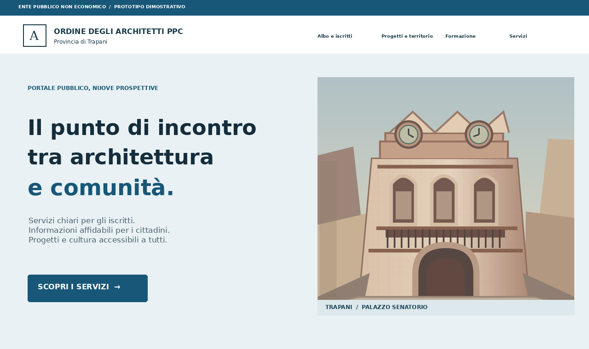
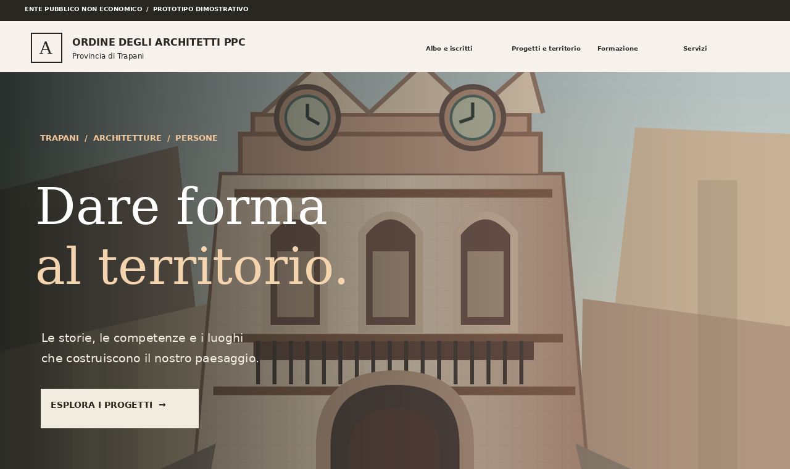
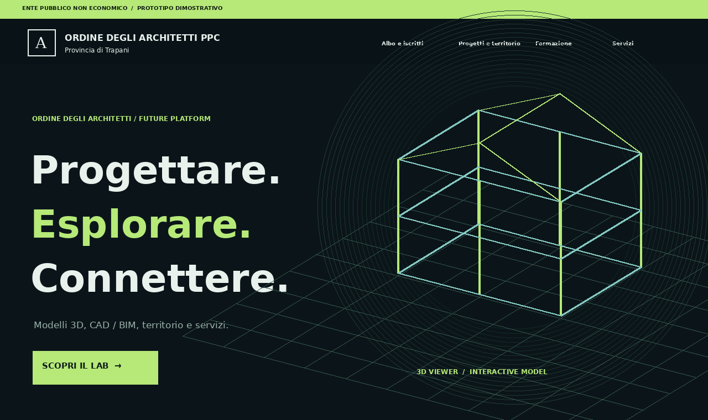

PROPOSTA 01 / CHIAREZZA
CIVICA
Istituzionale, leggibile, rassicurante. Priorità a sportello digitale, albo, documenti, formazione e accesso rapido. Una base sobria per i servizi dell’Ordine.
Tre prototipi HTML navigabili, con la stessa struttura dei contenuti ma tre personalità differenti. Apri una proposta e prova home, servizi, ricerca dei professionisti, schede progetto e visualizzatore 3D.

Istituzionale, leggibile, rassicurante. Priorità a sportello digitale, albo, documenti, formazione e accesso rapido. Una base sobria per i servizi dell’Ordine.

Editoriale, elegante, territoriale. Mette al centro le architetture, la fotografia, le storie degli studi e i luoghi: un manifesto per la cultura del progetto.

Immersiva, tecnica, sperimentale. Un’identità digitale distintiva con modello 3D in home e laboratorio per CAD, BIM e visite virtuali.
| Obiettivo | CIVICA | ARCHIVIO | ORIZZONTE |
|---|---|---|---|
| Priorità | Servizi al cittadino | Cultura e territorio | Innovazione digitale |
| Identità | Chiara, istituzionale | Fotografica, editoriale | Dark, tecnologica |
| Destinatario | Iscritti e pubblico | Studi e comunità | Progettisti e partner |
| Hero | Testo + architettura | Immagine immersiva | Modello 3D animato |
| Pagina 3D | Inclusa | Inclusa | Inclusa + home interattiva |
La scelta potrebbe essere ibrida: architettura informativa e servizi della CIVICA, art direction e storytelling di ARCHIVIO, visualizzatori e laboratorio digitale di ORIZZONTE. La conformità alle Linee guida PA e l’accessibilità si applicano a tutto il prodotto, non solo alla proposta istituzionale.
Documentazione di riferimento: Linee guida design servizi web PA ↗ · Sito attuale Ordine Architetti Trapani ↗